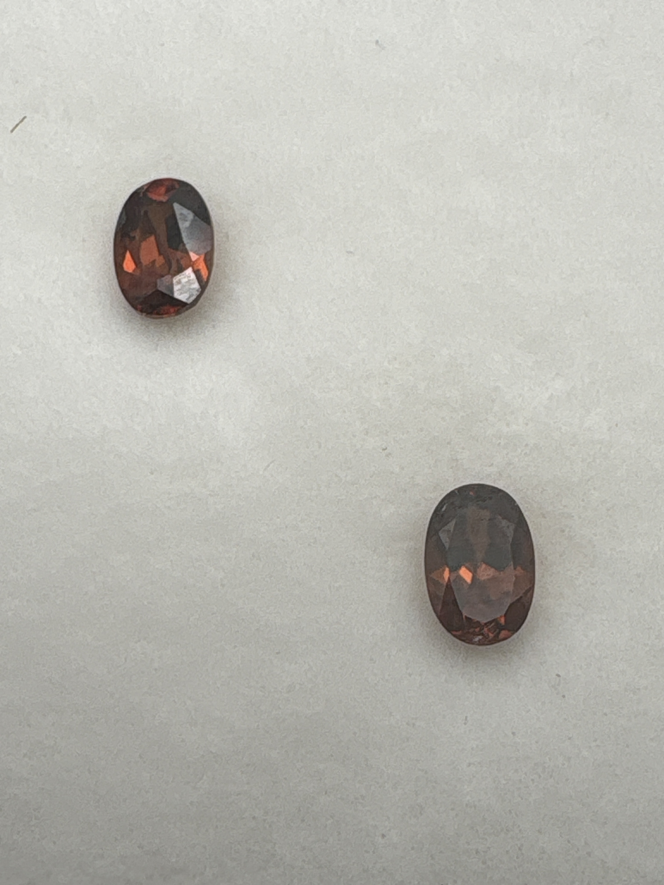

The Gem Drawer › No. 97

Two dark reddish-brown ovals; the label's plural matches the contents.
| Catalogue no. | #97 |
|---|---|
| As labeled | Red Zircon - PAIR, 2 stones in this box (matches label plural "ovals") |
| Shape / cut | Oval (both stones) |
| Weight | 0.67 (combined vs. per-stone not stated, see notes) |
| Measurements | 6x4mm oval (each) |
| Colour | Dark reddish-brown/maroon (reads darker than typical "red" in photos - see notes) |
| Clarity / condition | Not recorded |
Interested in this stone, or in the collection as a whole? Terry VanWormer can answer questions about it.
Click here to inquireor email Terry directly at maxrebo34@gmail.com